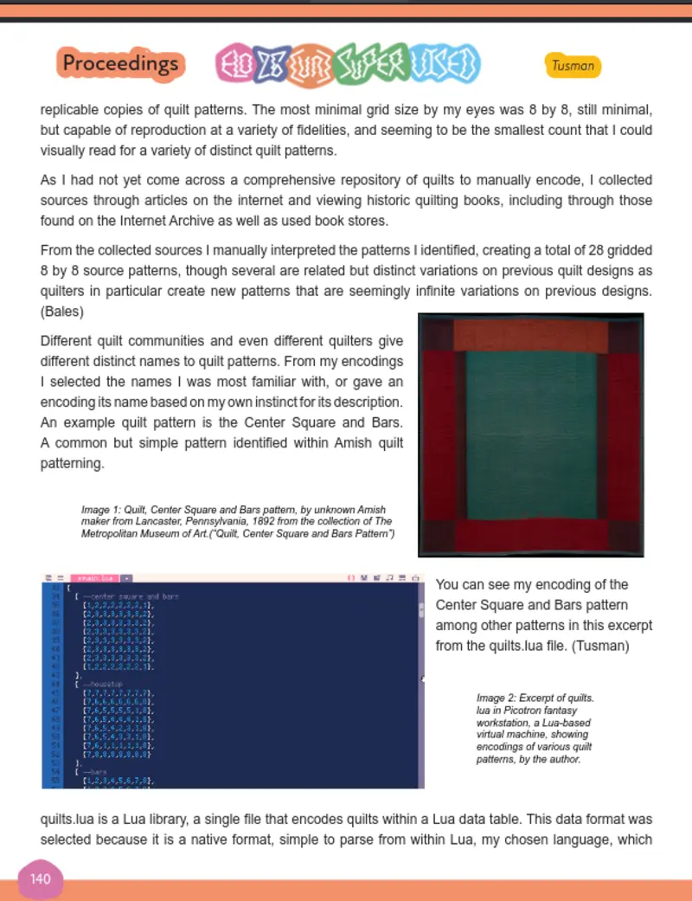

Quilt Poems: Encoding Craft Traditions as Generative Poetry
2026
Lee TusmanEditor's note: Written by the editor!
Conference paper on the process of creating generative visual quilt poems.

2026
Lee TusmanEditor's note: Written by the editor!
Conference paper on the process of creating generative visual quilt poems.